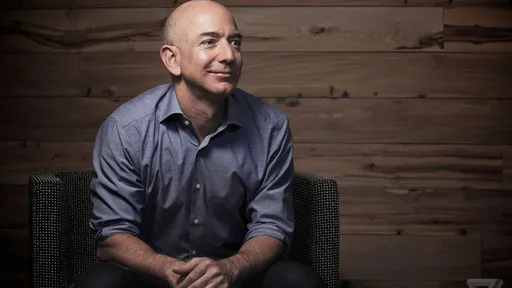
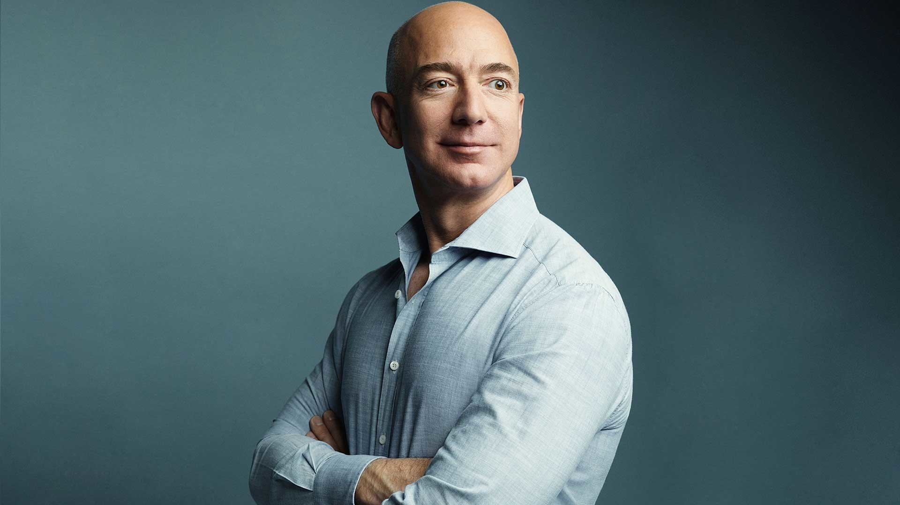

|  |  |
Jeffrey Preston "Jeff" Bezos (Albuquerque, 12/01/1964) é um empresário conhecido por fundar, ter sido o presidente e CEO da Amazon, uma famosa empresa de comércio eletrônico dos Estados Unidos.
Sua mãe Jacklyn Jorgensen estava no ensino médio quando deu à luz a Jeff. Ted pai de Jeff o abandonou qunaod ainda tinha 1 ano, desde então nao teve contato com o pai. Ted disse a Brad Stone, autor do livro A Loja de Tudo: Jeff Bezos e a Era da Amazon, que gostaria de conhecer seu filho, mas que não queria nenhuma ajuda financeira. Ted faleceu em 2015, aos 70 anos sem o ver. Porém Jeff pussuia outro pai, sua mãe se casou com o imigrante cubano Miguel Bezos. Mike, como é conhecido, adotou Jeff e transmitiu seu sobrenome.
Bezos trabalhou em Wall Street na area da informática. Depois trabalhou na construção de uma rede de comércio internacional para uma a Fitel. Ele trabalhou na Bankers Trust. Mais tarde trabalhou em oportunidades de negócios com acesso à Internet em fundos de cobertura na D. E. Shaw e Co.
"Graduou-se na Universidade de Princeton em 1986 com a graduação em engenharia elétrica e informática." by Wikipedia
Bezos fundou a Amazon em 1994. A empresa começou com a comercialização de livros e expandiu para uma grande variedade de produtos, serviços e inclusive em transmissões de vídeo e áudio. "Atualmente, é a maior empresa online de vendas do mundo, bem como o maior fornecedor mundial de serviços de infraestrutura em nuvem através do seu braço Amazon Web Services." by wikipedia. Bezos também tem outros investimentos empresariais gerenciados através da Bezos Expeditions.
"Amazon Web Services, também conhecido como AWS, é uma plataforma de serviços de computação em nuvem, que formam uma plataforma de computação na nuvem oferecida pela Amazon.com. Os serviços são oferecidos em várias áreas geográficas distribuídas pelo mundo. Os serviços mais conhecidos são o Amazon Elastic Compute Cloud e o Amazon S3." by wikipedia
"Bezos diversificou seus interesses comerciais quando fundou a empresa aeroespacial Blue Origin em 2000. Ele comprou o jornal The Washington Post em 2013 por US$ 250 milhões em dinheiro. A Blue Origin começou a testar os voos para o espaço em 2015 e os planos para o voo espacial humano suborbital comercial começaram a partir de 2018." by Wikipedia
"Em 2021, Bezos saiu da Amazon, segundo ele, para ficar em outros projetos como a direção do Washington Post e sua empresa espacial, Blue Origin. No dia 20 de julho de 2021, Jeff Bezos voou ao espaço ao lado de seu irmão, Mark Bezos. O voo durou mais de 10 minutos." by Wikipedia
Em 2000, Bezos fundou a Blue Origin, uma empresa de voo espacial, resultado do seu fascínio pelas viagens espaciais. A empresa tornou-se publicamente conhecida em 2006, quando comprou terras no oeste do Texas para instalações de testes. "Em uma entrevista de 2011, Bezos indicou que ele fundou a empresa espacial para ajudar as "pessoas a entrar no espaço" e declarou que a empresa estava comprometida em diminuir o custo e aumentar a segurança do voo espacial." by wikipedia
Atualmete Bezos é o 2º bilionário do mundo, o posto de 1º pertence ao Elon Musk.